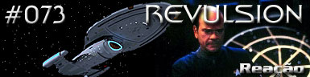
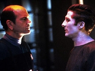
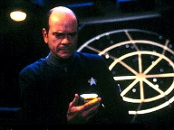
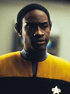
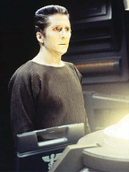
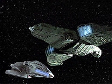

|
Voyager
Temporada 4

Anlise do episdio por
Daniel
Sasaki



| MANCHETE
DO EPISDIO Data Estelar: 51186.2.  Durante a cerimnia em comemorao promoo de Tuvok a tenente-comandante, a Voyager recebe um chamado de socorro de Dejaren, um holograma aliengena que diz que a tripulao de sua nave est morta. O Doutor, ansioso para conhec-lo, rastreia a fonte da transmisso e designado para uma misso de resgate com B'Elanna. Quando chegam na nave Serosian, encontram-no.Djaren diz que sua tripulao foi infectada por um vrus mortal. Durante sua interao com o Doutor, fascina-se pela sua liberdade e habilidades. Entre os Serosianos, no havia tratamento semelhante; ele era considerado mera pea de tecnologia e ficava a maior parte do tempo confinado em um compartimento. Mais tarde, enquanto B'Elanna repara os sistemas, Djaren a agride verbalmente, demonstrando desprezo pelas formas de vida orgnicas. A engenheira divide suas preocupaes com o Doutor e informa-lhe que o holograma aliengena mentiu sobre uma contaminao radioativa nos decks inferiores da nave. Ela acredita que h algo l embaixo sobre o qual ele no quer que saibam. Embora tenha empatia com Djaren, ele concorda em mant-lo ocupado enquanto ela investiga o assunto.  Enquanto isso, na Voyager, Harry designado para trabalhar com Seven no novo laboratrio de Astromtricas. O alferes fica apreensivo ao lado da ex-Borg, principalmente quando ela interpreta seus comentrios como uma tentativa de seduo romntica. Na nave Serosiana, o Doutor e B'Elanna descobrem que Djaren cortou o canal de comunicao com a nave auxiliar. Enquanto tentam restabelec-lo, o holograma psicopata se reativa e a ataca. Ele desconecta o emissor mvel do Doutor, desmaterializando-o. Torres tenta escapar, mas Djaren a persegue. Por fim, ela consegue desestabilizar sua matriz com um condute isomagntico, desativando-o para sempre. Ao trazer o Doutor de volta, eles retornam para a Voyager.
"Revulsion" um episdio inofensivo. Com isso, o que se diz na verdade que no acrescenta nada trama maior, mas tambm no a prejudica -- como muitos o fizeram antes dele. Consegue entreter, mas no surpreende. Seria, em termos simples, "gua com acar". Atentando a alguns detalhes do roteiro, depreende-se elementos interessantes: tem-se uma trama A, na qual um holograma aliengena aterroriza B'Elanna e o Doutor, e uma trama B, em que Harry designado para trabalhar com Seven of Nine em um projeto e acaba envolvendo-se em uma srie de situaes embaraosas.  A trama A, que promete ser o centro da histria, revela-se o ponto mais fraco. Tem-se Djaren, um holograma semelhante ao Doutor em aparncia e habilidades fsicas, mas perigoso por ter sua matriz danificada. Torres e o Doutor aparecem para ajud-lo, so expostos a algumas colocaes interessantes sobre a natureza da vida hologrfica e sua coexistncia com seres orgnicos. Mas, a partir da, Djaren comea a perder a calma e ataca B'Elanna com insultos. O enredo se resume s tentativas do holograma em assassin-la. Entende-se, pelo breve histrico do personagem, que Djaren guarde mgoas justificativas de suas aes. Alis, a atuao de Leland Orser certamente deu-lhe vida e energia. O telespectador compreende o nervosismo aparente e o tormento do holograma. Mas a forma como o roteiro se resolve deixa a desejar. Opta-se pelo caminho mais simples: j no incio da histria, h a revelao de que Djaren assassino. Isso torna suas atitudes fceis de prever. Alm disso, os clichs do o ar da graa: com certeza B'Elanna fica ctica, afinal no todo dia que algum corre atrs das pessoas com martelos. Essa trama realmente peca com a ausncia de qualquer impacto provocado no Doutor pelo fim de Djaren. Levando-se em conta a forma como o mdico aprendia e se interessava por outros seres no-orgnicos, era de se esperar uma reao quanto ao desfecho "necessrio" do holograma. Mas "Revultion" no mostra qualquer informao nesse sentido. Bom, talvez o faa nas entrelinhas: ao final, brinca com Tom e B'Elanna na Enfermaria, de onde se deduz que no sentiu nada com a perda de Djaren.
 Houve cenas engraadas dignas de nota, como o momento em que Seven interpreta a ateno amigvel de Harry como uma tentativa de seduo. "Voc deseja copular?", indaga a ex-zango, com aquele ar pragmtico e direto dos Borgs. Isso mata qualquer tentativa de romantismo e, pior, intimida. Hilria tambm foi a conversa entre o alferes e Chakotay, o que remete a outro questionamento: o talento de Beltran, que, ao longo de toda a srie, foi relegado a poucos instantes memorveis. mesmo uma pena. Voyager parece a barca das histrias perdidas. Apesar do teor cmico, essa trama tambm enriquece o "arco Seven". muito boa a cena em que ela corta a mo e percebe que, agora, precisa de ateno mdica. Estava acostumada com a regenerao da Coletividade. No tem mais esse amparo. Quando murmura "sou fraca", consegue tocar a todos. Pode-se ver a frustrao e vulnerabilidade da personagem. Aqui, Jeri Ryan oferece outra excelente performance.
 Em suma, "Revultion" diverte, mas no faz jus sua premissa original. Vale mais pelos momentos isolados do que o sentido maior. Diverte, mas ser facilmente esquecido por no trazer elementos que enriqueam o legado da srie.
Tuvok - "During my three years on
Voyager, I've grown to respect a great many of you. Others... I've learned to
tolerate." Paris - "What
can I do for you, Doc?" Seven
- "The last time we worked together, I struck you on the base of your
skull and attempted to contact the Collective."
Direo de
Kenneth Biller Elenco: Kate
Mulgrew como Kathryn Janeway Elenco
convidado: |